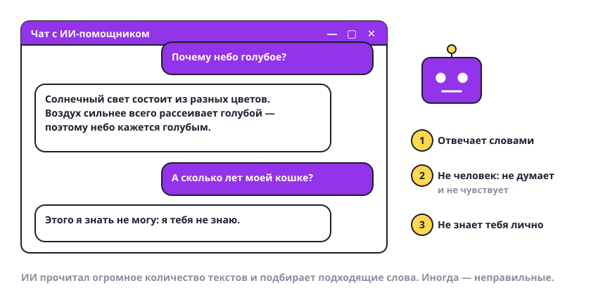

Что такое ИИ и как он отвечает
ИИ — это программа, которая отвечает словами. С ней можно поговорить почти как с человеком. Почти.

Что важно знать
- Ты пишешь — он отвечает. Открываешь чат, пишешь вопрос обычными словами, получаешь ответ текстом. Это и есть вся работа с ИИ.
- Он прочитал очень много текстов. Книги, статьи, сайты. Из них он научился подбирать слова, которые обычно идут друг за другом.
- Он не человек. Он не думает и не чувствует, хотя пишет «я думаю» и «мне кажется». Это просто удобные слова.
- Он не знает тебя. Ни твоё имя, ни твою кошку, ни твои оценки — пока ты сам не напишешь. И это как раз хорошо, об этом будет отдельный урок.
- Он может ошибаться. Причём уверенным тоном. Поэтому важные вещи всегда проверяют.
Попробуй сам: попроси ИИ объяснить простыми словами, почему небо голубое. Потом задай тот же вопрос взрослому и сравни ответы.
ИИ — как очень начитанный сосед: рассказывает интересно, но иногда путает и никогда не признаётся, что не помнит.